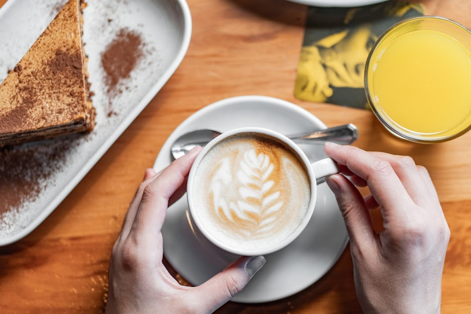

Nuestra Carta de Especialidad
Descubrí nuestras selecciones de granos únicos, bebidas frías y caliente preparadas por baristas apasionados, acompañadas de la mejor pastelería artesanal.

Bebidas Recomendadas
Las de siempre, con sabores únicos y bien marcados
- Caramel Macchiatto - El preferido por todos
- Espresso Doble - Blend Arábica de la casa
- Flat White con leche entera o vegetal
- Cold Brew macerado en frío por 18 horas